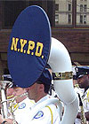
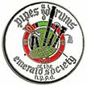
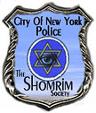
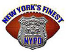
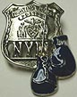
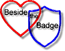
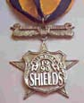
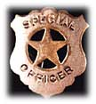
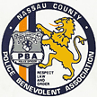
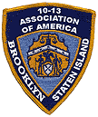

|
New York City Police Department
The Official NYPD web page
NYPD Recruit |
|
The Detectives' Endowment Association |
|
Sergeants' Benevolent Association |
|
Lieutenants Benevolent Association |
|
Captains Endowment Association |

|
NYC Employee Benefits Program |
|
New York City Police Pension Fund |
|
The Retired Public Employees Association (RPEA) works to protect, promote and advance the interests of all New York public retirees through effective advocacy and lobbying efforts. Click here to find whether your NYS pension will be taxed if you move to another state. |
|
NYC Police Museum |
|
Police Organization Providing Peer Assistance
The POPPA Organization provides peer support for New York City police officers experiencing personal or professional problems. |
|
FLSA Lawsuit on behalf of New York City's Police Officers |
|
NYPD Columbia Association
The Columbia Association, founded in 1932, is a Fraternal Association of Italian-American Police Officers of the New York City Police Department |
|
NYPD Emerald Society
The goal of the organization is to help foster Irish heritage and tradition within the department, and also to promote and preserve the accomplishments that the Irish have made to law enforcement. |
|
NYPD Hispanic Society |
 |
NYPD Police Band |
|
National Latino Officers Association of America
The mission of all LOA chapters is to promote tolerance toward and understanding of the Latino culture in all public and private agencies, especially in the law enforcement communities. |
 |
NYPD Pipe Band
The official NYPD Emerald Society Pipes and Drums website. |
|
Policewomen's Endowment Association
To unite and promote the interest and welfare of female uniform members of the Police Department of the City of New York. |
|
The Praetorian Law Enforcement Motorcycle Club |

|
NYPD Pulaski Association for NYPD uniformed members of Polish heritage |
|
Police Officers for Christ |
|
NYPD Holy Name Society |
 |
The NYPD Shomrim Society |
|
NYPD Steuben Association
for NYPD uniformed members of German or Austrian heritage |
|
New York Finest Baseball Club |
 |
NYPD Football Team |
|
NYPD Soccer Team |
|
NYPD Gaelic Football Club |
 |
Fighting Finest Boxing Team |
 |
Beside the Badge Newsletter
Providing information & fellowship to supporters of law enforcement officers (LEO) everywhere |
 |
New York State Shields, Inc.
The New York State Shields, Inc. is an organization of law enforcement officers active and retired from all ranks throughout the New York State area. |
|
State of New York Office of the Comptroller's lost funds page |
|
CopSeek.com
Links to thousands of police sites. |
|
New York City Police Memorial
A list of all NYPD officers killed in the line of duty. Compiled by Captain Harvey Katowitz, NYPD (ret.) and P.O John P. Young. |
|
Home of the NYPD Memorial
Features a story each month about a NYC police officer killed in the line of duty. |
|
International Police Association
Region #2 — New York City |
 |
Police Badge Network
A police memorabilia collector's site |
|
The Police' Officer's Internet Directory
A collection of internet resources for police officers. |

|
International Law Enforcement
A directory of international police websites. |

|
The Dragnet Page
This site is devoted to all things Dragnet, focusing on the 1967-1970 TV series. |
|
The Blue Knights
a non-profit fraternal organization consisting of active and retired law enforcement men & women who enjoy riding motorcycles. |
 |
Nassau County PBA |
|
Nassau Police Conference
An organization composed of the members of the 20 village, city and special district police departments in the County of Nassau. |
|
American Police Beat
The online voice of America's law enforcement community |
|
APB Online
A one-stop shop for all things criminal. |
|
NY COP Online Magazine |
|
|
 |
New York 10-13 Association
Brooklyn and Staten Island, Inc. |
|
The Injured Police Officer's Fund of Nevada.
To date the I.P.O.F. has donated nearly 3 million dollars to the NYPD, NYFD, and the Port Authority. |
|
Department of Veterans Affairs |